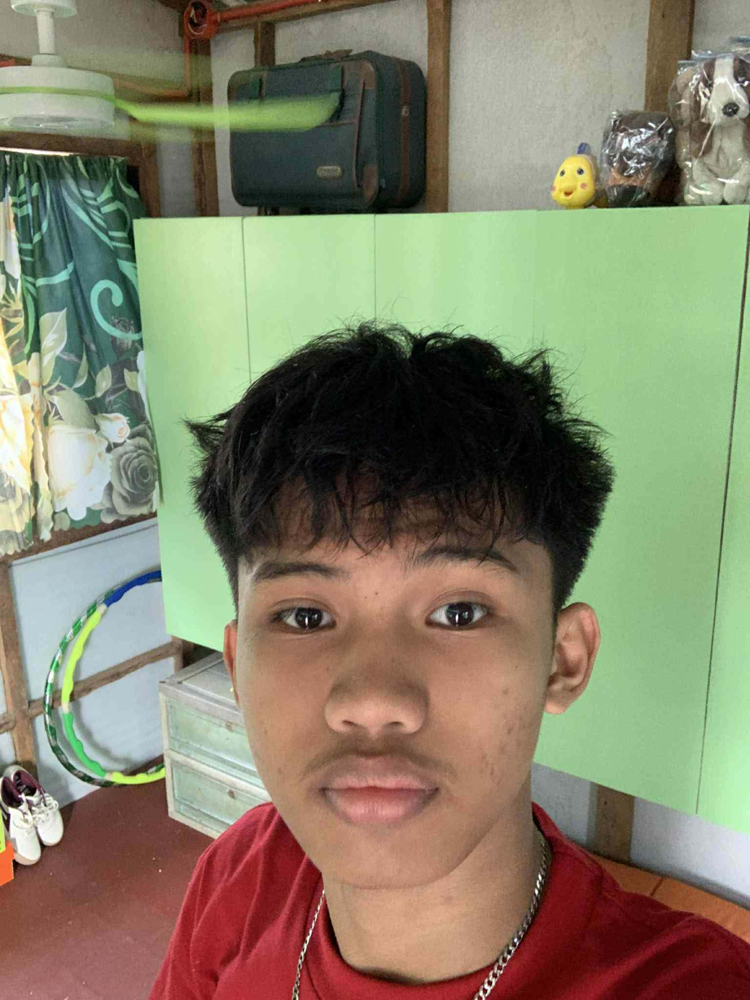

My name is Jan Laurence Igot.
I am a Grade 11 ICT Student.
I enjoy learning programming and improving my computer skills every day.

alt="My Profile Picture" width="250" This image represents me as a learner and future programmer. I am a hardworking, responsible, and determined student. I enjoy learning new things, especially in programming and technology. I believe that every challenge is an opportunity to grow and become a better person. My goal is to become A successful programmer in the future.